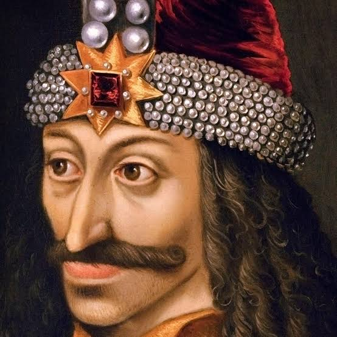
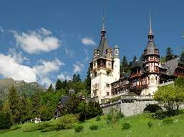

There was once a beautiful place
Small and full of struggles, but magical indeed
Find out more
Romania has many beautiful places to visit,
an interesting history, good food and a vibrant night life

Vlad the Impaler
Vlad III, usually known as Vlad the Impaler or Vlad Dracula was Voivode of Wallachia three times between 1448 and 1477, when he died.
Read more

Places to visit
Romania has impressive Ancient History and incredible natural beauty. All landforms can be found here: mountains, hills, plateaus and plains.
Read more
Traditional food and clothes
Traditional Romanian food is hearty and full of flavour. Traditional clothes are worn with pride during cultural events.
Read more
Night life
Bucharest is considered a party city in Europe. It is known for its affordable clubs, passionate crowds and staying open through the night.
Read more